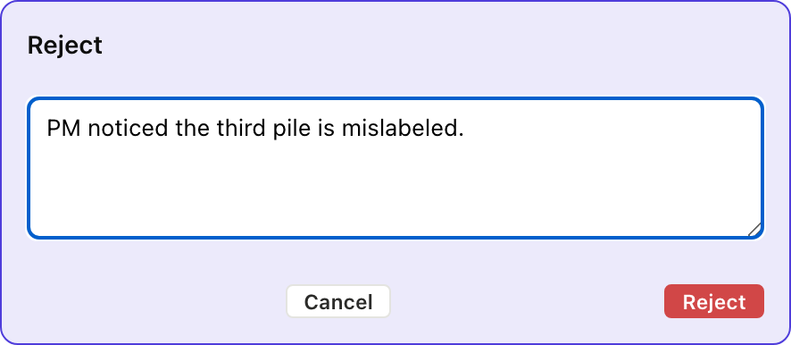
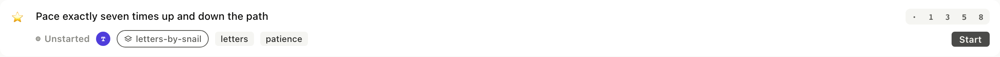
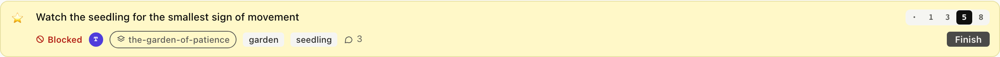

When things go wrong
5. When things go wrong
Stories don't always go forward. The PM rejects one, the dev pair realizes another shouldn't have been started, someone gets blocked on external work.
5.1 Reject (with a reason)
Sort the unread letters has been delivered, and the PM notices on
review that the third pile is mislabeled. The red Reject button on
the delivered card flips the story back to started, records the
reason as a dated comment, and hands it back to the dev pair to
fix.

$ am reject stories/sort-the-unread-letters-into-three-quiet-piles.md \
--reason "PM noticed the third pile is mislabeled."
✓ rejected, back to started
reject_item takes the path, the reason, and optionally the
author. It writes a comment under ## Comments in the story body
and flips status back to started in one operation.
Full envelope
{
"jsonrpc": "2.0",
"method": "tools/call",
"params": {
"name": "reject_item",
"arguments": {
"path": "stories/sort-the-unread-letters-into-three-quiet-piles.md",
"reason": "PM noticed the third pile is mislabeled.",
"author": "pm"
}
}
}
What just happened
- Status flipped to
started, the story is in the dev pair's court again - A dated comment landed under
## Comments:@pm 2026-05-22, rejected, back to started. Reason: PM noticed the third pile is mislabeled. accepted:was cleared (it was never set, butreject_itemguarantees it stays unset)- The card moves back into the started cluster of the current sprint
5.2 Unstart
Sometimes the dev pair starts a story and realizes it should not
have, because it is the wrong story or it turns out to be larger
than expected. unstart is the reset, clearing the in-flight
timestamps and returning the story to unstarted.

$ am unstart stories/yell-at-the-seedling-to-grow-faster.md
✓ status: unstarted started/finished/delivered/accepted cleared
set_status with status: "unstarted" does the same thing. It's
not a separate tool, the state machine treats unstarted as the
full reset.
Full envelope
{
"jsonrpc": "2.0",
"method": "tools/call",
"params": {
"name": "set_status",
"arguments": {
"path": "stories/yell-at-the-seedling-to-grow-faster.md",
"status": "unstarted"
}
}
}
What just happened
- Status reset to
unstarted started:,finished:,delivered:,accepted:all cleared- Cycle time will be measured from the next
am startif the team comes back to this story (history is in git if you need to look) - The card returns to the unstarted cluster below the in-flight line
5.3 Block
Blocked is different from rejected: the work has not gone wrong, it simply cannot proceed because of something outside the dev pair's control. Pace exactly seven times, for example, needs the path to dry first.

$ am block stories/pace-exactly-seven-times-up-and-down-the-path.md \
--reason "Path is wet from the rain. Waiting for it to dry."
✓ blocked
block_item writes a blocked: true flag plus blocked_reason: on
the story file. The board renders the card with a red Blocked chip
in place of the state pill. unblock_item clears both.
Full envelope
{
"jsonrpc": "2.0",
"method": "tools/call",
"params": {
"name": "block_item",
"arguments": {
"path": "stories/pace-exactly-seven-times-up-and-down-the-path.md",
"reason": "Path is wet from the rain. Waiting for it to dry."
}
}
}
What just happened
blocked: trueandblocked_reason: …landed on the story file- The card's status pill is replaced by a Blocked chip
- The story stays in priority, blocked is a flag, not a column
move. When the blocker clears,
am unblockflips the flag and the story resumes as if nothing happened.